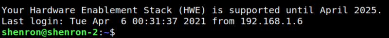
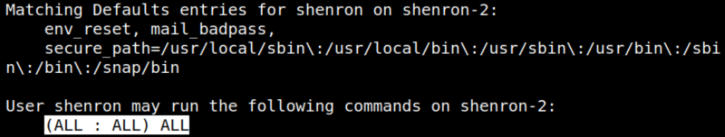

5.2 Swith to shenron user
1. Connect via SSH with the password you found in the previous step.
bash-5.0$ssh shenron@shenron
Output:

2. Check “sudo” permissions.
shenron@shenron-2:~$sudo -l
Output:

“shenron” can run all commands with privileges of all users and groups.